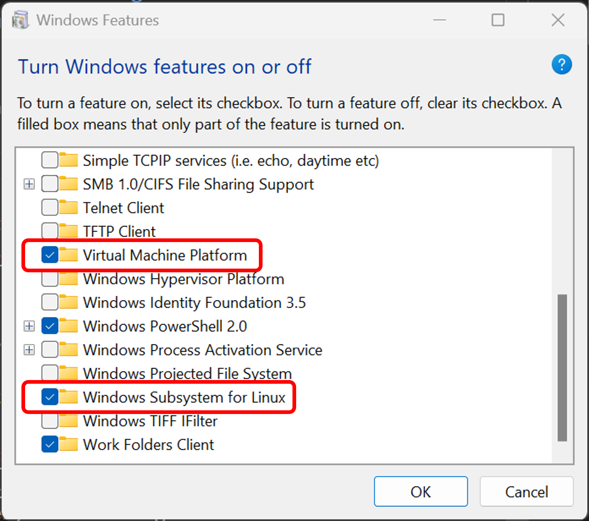
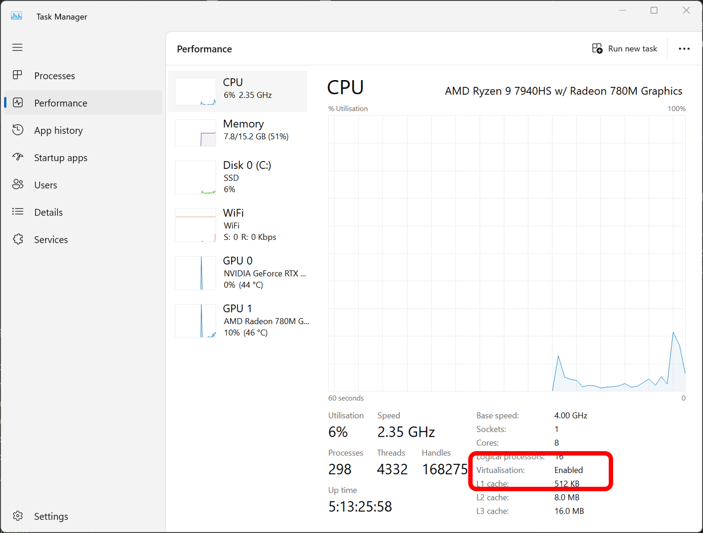

Install WSL¶
Riallto relies on WSL in order to install the necessary application building developer tools.
WSL Requirements¶
For WSL to function the following windows features need to be enabled:
Virtual Machine Platform
Windows Subsystem for Linux
Virtualization enabled (in BIOS/UEFI)
On Windows 11 platforms, simply running the following command in a powershell terminal, as per official Microsoft instructions, will enable the correct features and setup WSL for you.
wsl --install
We have noticed this has not been the case on every machine, so the following are manual sets and checks you should do if the command above did not work.
Enabling WSL Windows features¶
Click the windows start button and search for “turn windows features on or off”. Make sure, Virtual Machine Platform and Windows Subsystem for Linux are selected. As follows:
If these features were not previously select, you may have to reboot your machine after enabling them.
Refer to Microsoft’s manual instructions for enabling WSL features for more detail.
Enabling virtualization¶
You can check if virtualization is enabled in the Windows Task Manager’s performance tab. In Task Manager, select CPU and check for “virtualization: enabled”.
Refer to this Microsoft guide on enabling virtualization with various manufacturer devices.